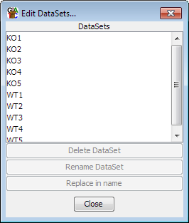

Importing Data
Once you have selected a genome you can begin to import your data. You can import
data either into an empty project or add new data to an existing project. If you
import new data into an existing project you will need to rerun any quantitation
you had previously done as it won't carry over to newly imported data.
SeqMonk understands a few defined file formats and if you use one of these then you
can load your data directly. The currently supported file formats are:
If your data is not in one of these formats then you can use the
Generic Text File Importer to tell
SeqMonk about your file format and import your data that way.
Common Options
Some of the import filters may add their own specific options when importing, but there
are a couple of options which are present in all import filters.
- Remove duplicates - you can choose to not import duplicate reads. This may help to
cut down on PCR artefacts, but could potentially misrepresent your data if you have very
high coverage over enriched areas. Rather than removing duplicates when loading data you
can later choose to ignore duplicates when performing quantitation.
- (For Single End Reads) Extend Reads - It is common practice to use single end read
data to measure enrichment in ChIP-Seq type experiments. Analysing this data can be tricky
since the region which is sequenced is not over the site of interaction, but is one end of
a fragment which covers that site. Paired end data is easier to interpret since it can show
the whole of the enriched fragment so you get more complete peaks over interaction sites.
To make single-end data easier to interpret you can choose to extend each of your reads by
a specified length so that they more closely represent the region which was sequenced. In
this way you get many of the advantages of paired end sequencing with the lower cost of
single end.
- (For Paired End Reads) Distance cutoff - Correctly matching paired end reads should map
within a few hundred bases of each other on the genome. Reads positioned further apart
usually result from a mismapping of one end (although they could arise from indel or recombination
events). To avoid cluttering the display with really long reads we set a limit on the allowed
distance between the ends of read pairs.
When you import your data there may be (but hopefully won't be) a major problem
which will cause the import to be stopped and an error reported. There may
more commonly be some warnings produced when importing your data. Warnings
won't stop your data from being imported but they will be shown to you after the
import.

The warnings dialog will show you the total number of warnings, but will only show
you the details for the first 500 if you generated more than that. Warnings are
not necessarily a problem but you should review them carefully to ensure that
the data which is imported is OK.
The most common warnings you will see are:
- Reading position 100000 was beyond the end of ChrX - this is normally an indication
that you have selected the wrong genome assembly as the basis for your project. You
should check which assembly was used for your mapping and ensure that you are using the
same one otherwise your reads will appear in the wrong place.
- Couldn't find a chromosome called [some name]. This can be caused by sequences
being mapped to fragments which aren't part of the main genome assembly. This isn't a
problem but means you can't analyse those sequences. It can also be caused by different
conventions being used to name chromosomes (MT vs M for mitochondrion or 1 vs I for the
first chromosome). You need to ensure that your data uses the same conventions as the
reference genome.
When your data is initially imported it will appear in the Data View as a Data Set.
Each Data Set will be named after the file from which it came. If you want to
change the name of the Data Set you can do this by either Right-clicking on the Data Set
in the Data View and selecting "Rename" or by selecting Data > Edit Data Sets
and then using the controls there to select and rename each Data Set. This gives you
more control, including the ability to do bulk find and replace renaming of a large
group of datasets.

Once your data is imported you should move on to
creating Data Groups.